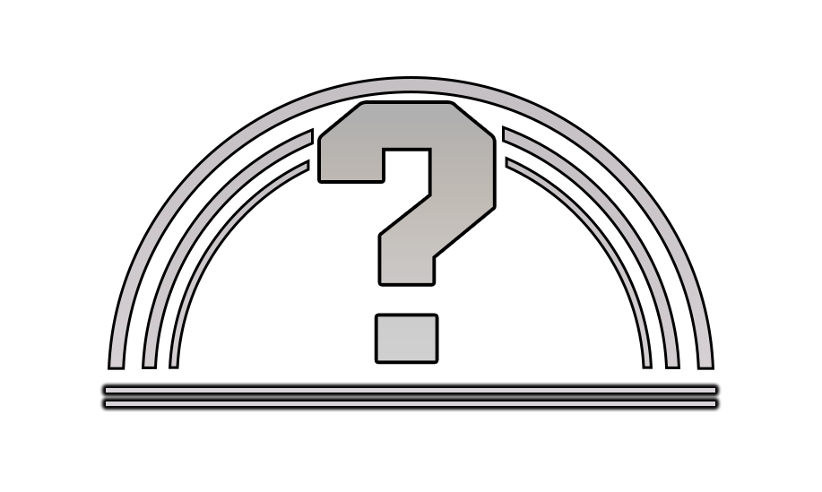
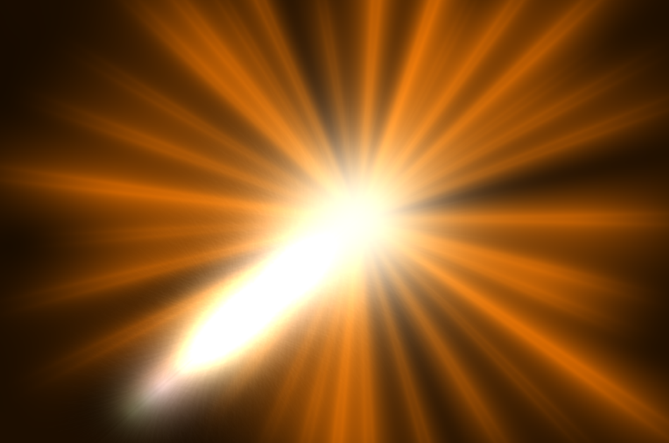
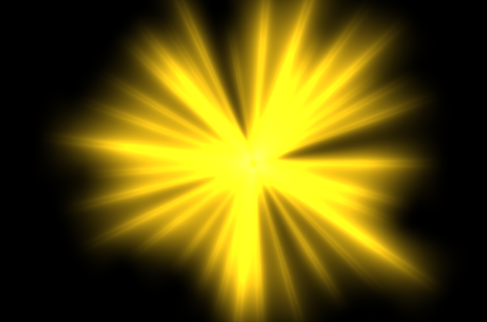
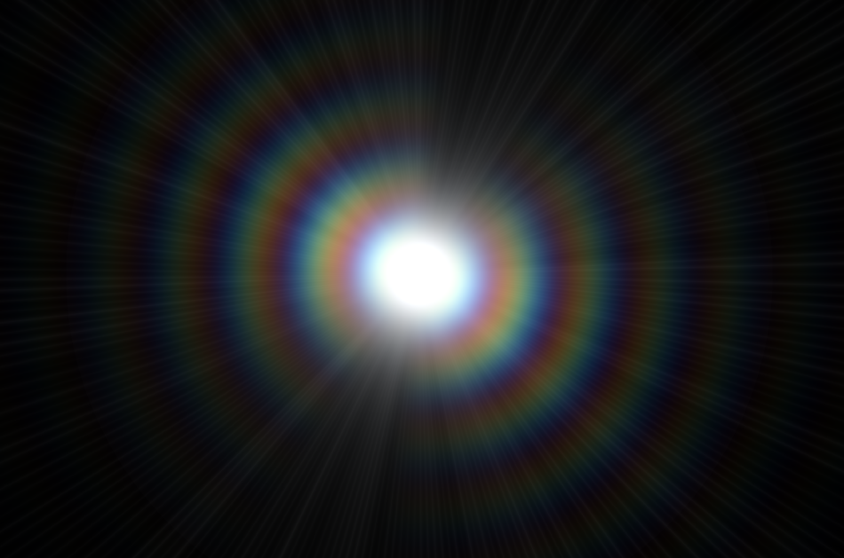
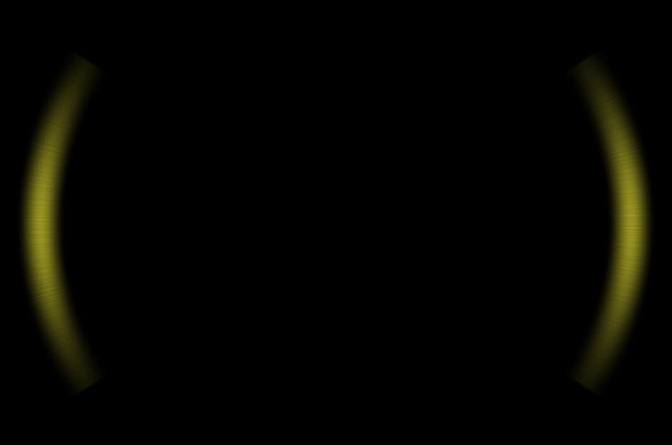
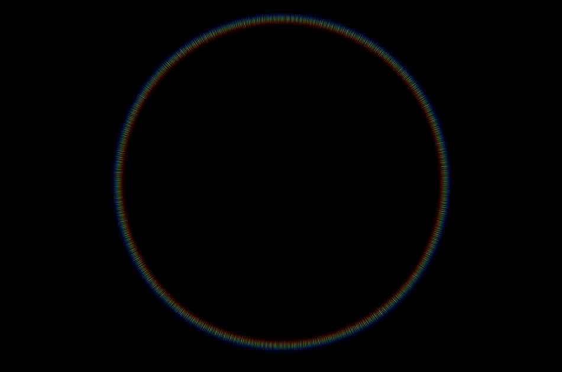
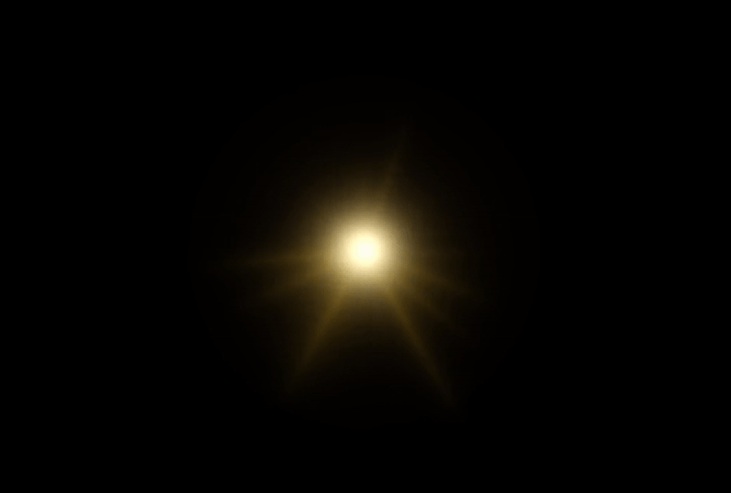
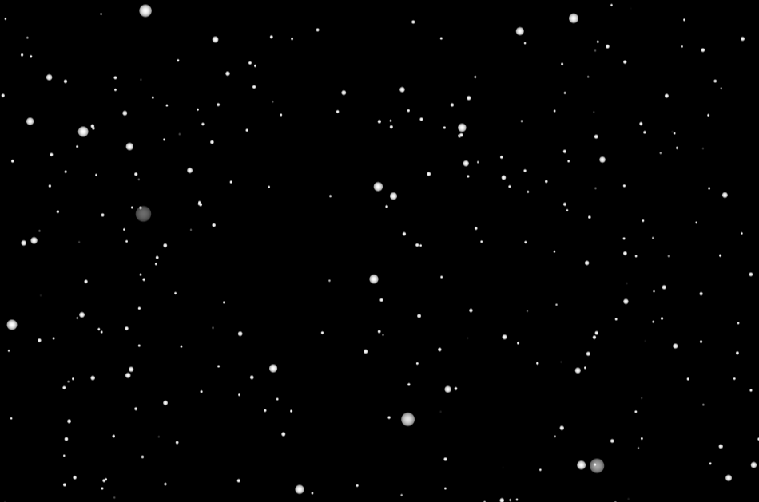
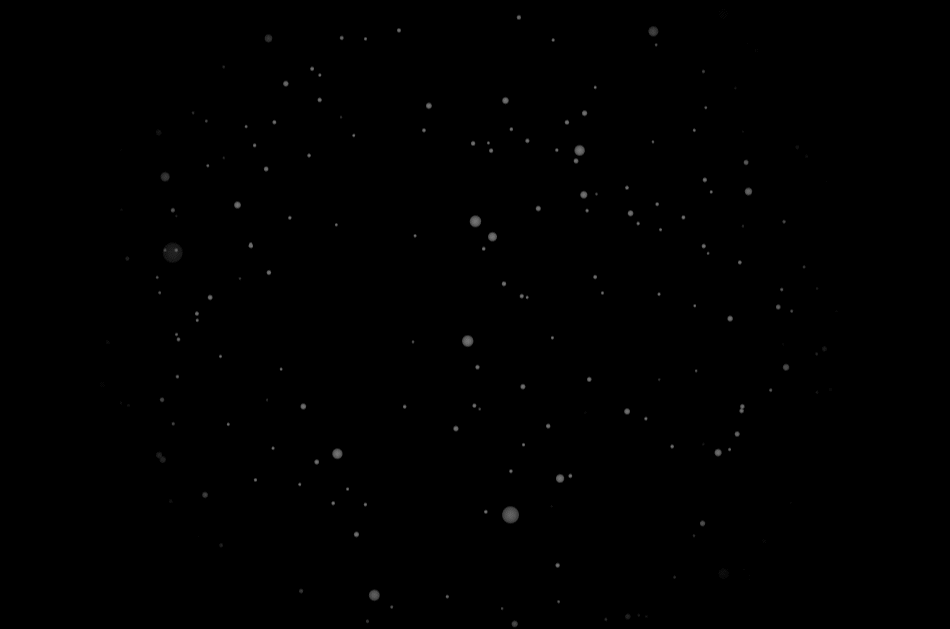
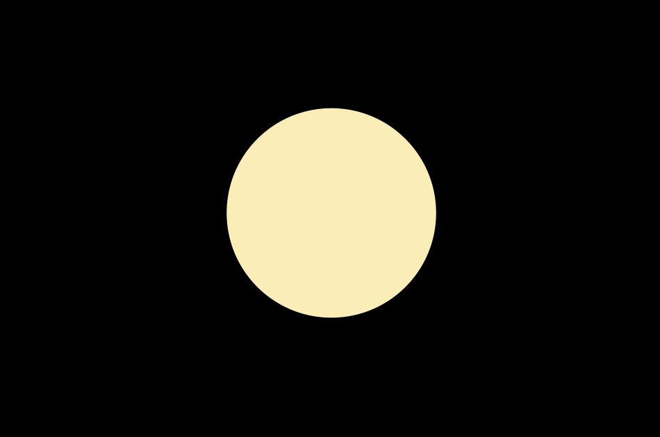

Last month I uploaded a “game show” video to Diaphone’s channel where he and Jmcrofts had to guess the rank of random players in SF6.
From the beginning I knew I wanted to use the rank up animation from the actual game to reveal the results, but it was pretty much impossible for me to rip the animation, and I’m sure I would have to get to every single rank myself so I could record every single one, and that’s not gonna happen lol.
This is what I came up with:
It was a lot easier than I thought at first, but I had no idea where to start. As always, my strat for making effects or animations is to just aimlessly mess around until it looks acceptable.
First, I started getting the rank renders from SF6’s Buckler’s Bootcamp I don’t know if many people know about this, but you can check your match history from the game, and search for other players’ stats, matches and whatnot.
This is a .zip with all the .pngs (except Legend rank): SF6 Rank renders
I recommend using some kind of upscaling tool because the files are very small.
Couldn’t find the “?” icon that appears before getting your first rank, so I just made it myself in Photoshop with the pen tool and a bunch of shapes.  Never made lightning animations or anything similar so I just started playing around with a couple of effects in AE until I found BCC Lens Flare 3D You can modify every aspect of the lens flare and the presets are a really good starting point.
|  |  |
|---|---|
| BigBrightAmberLight default preset before and after editing some parameters | |
|  |  |  |
|---|---|---|
| DifractionDD default preset before and after editing some parameters | ||
|  | |
|---|---|
| DigiCamSunDD default preset before and after editing some parameters | |
Now I just need to animate opacity, scale, position, and some other BBC Lens Flare parameters so it matches the original animation. Also made a mask for the big yellow flare with the shape of the halo (that I added later just by making a shape and adding some blur and glow to it)

Looking good! Only thing left is to add the actual rank renders, and a couple of cool details that make the animation a lot cooler.
|  |  |
|---|---|
| Used the CC Star Burst effect for this, but didn't look how I wanted. I don't know how to achieve the look I was going for yet, but it's a really small part of the animation so it's not a big deal. | |
|  | |
|---|---|
| Made a circle and smashed it to pieces by using the Disperson effect. This also doesn't look exactly like the original animations, where the triangle shaped pieces get smaller and smaller before they disappear. Couldn't find a parameter that could do what I was looking for, and I didn't want to make every shape one by one so I could achieve the exact effect. But I think it looks cool anyway. | |
And here’s everything put together:

I’m pretty happy with the result, but it’s not completely identical to the original animation. Some colors are a bit off, light rays are different, less bright and more subtle. But the goal was never to make a 1:1 remake, and it’s perfectly serviceable for the video I was making the animation for.
Maybe in the future I’ll try to perfect it but for now it’s more than enough.